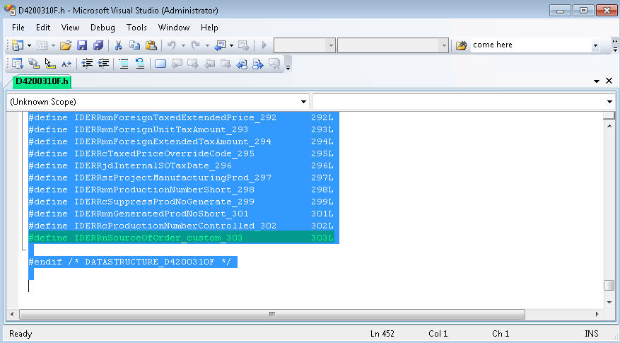
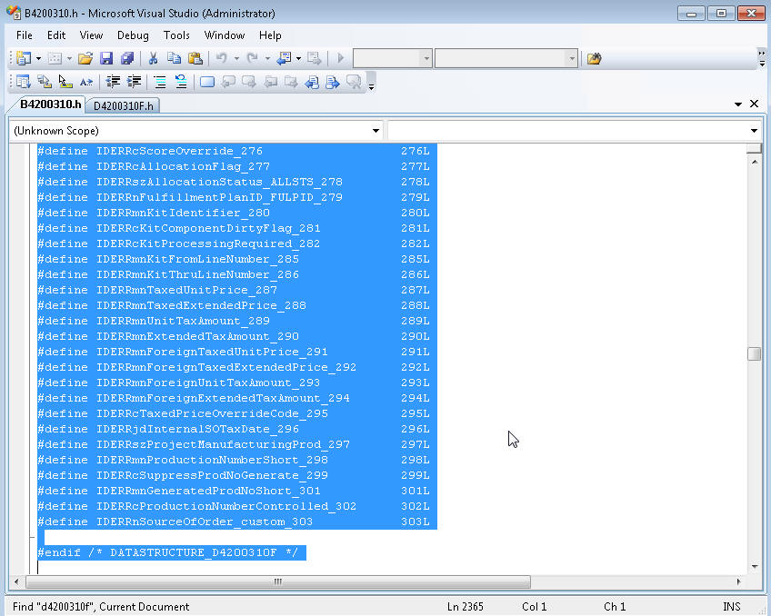
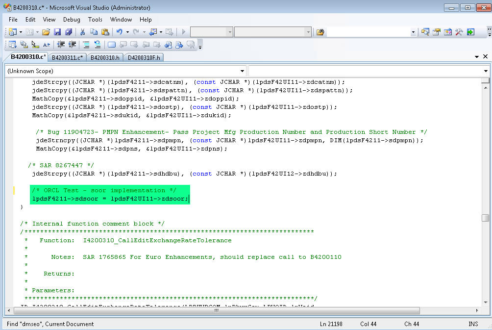
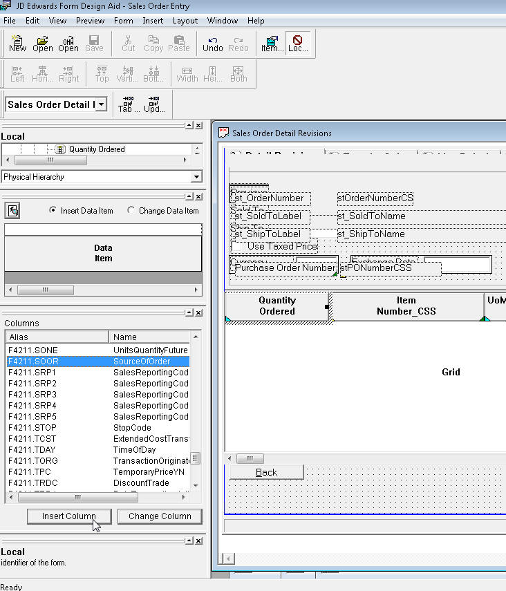

BSFN: How to Implement Sales Order Detail Cache (F42UI11) using column SOOR (Source of Order) in P421002 - Case Study
Purpose of Document
THIS IS INTERNAL ONLY DOCUMENT, DO NOT DISTRIBUTE TO CUSTOMER. ORACLE SUPPORT DOES NOT SUPPORT CUSTOMIZATION.
This document is to show example on how sales order application (P4210) makes use of cache (F42UI11) by adding additional column. This is example only and we discourage user from changing any standard functionality.
Before you start to change any standard functionality, check,
What's the purpose of populating column SOOR?
Which tables are your target table (header F4201 or detail F4211)?
You can populate it into header (same is true for EDI R47011) but you shall not be able to populate it into detail though sales order detail files (F4211 and F42UI11)
Currently this column is in use for demand scheduling. For instance, source of order = '1' indicates the sales order is being generated by the demand scheduling system (B4206000, B4206010). The demand system will place an order on hold when the cumulative order quantity has reached or fallen below zero. So possibly you may consider to populate user reserved columns because this won't disrupt any exiting logic.
Purpose of this document is to explain as-is routine to explain how cache (F42UI11) is handled in sales order master business function. Make it sure that the columns to be added does exist from F42UI11 or F42UI12. In case a certain column is not a member of these sales order detail cache tables, you may need to add it manually and generate table either F42UI11 or F42UI12.
Note that Oracle shall not bear any responsibility for the outcome you may get and this modification may terminate support agreement for a certain application. Important: since this change include the change of data structure, full package must be built after finishing test successfully
A. As – is routine explanation
User populate GC Source of Order
This value gets handed over in calling F4211FSEditLine at Row Is Exited/Changed - Asynch event
lpDS of F4211FSEditLine value assigned to F42UI11.soor (at I4200310_LoadParmsForF42UI11 in B4200311.c)
F42UI11.soor assigned to F4211.soor (at I4200310_LoadF4211ParmsForED in B4200310.c)
B. Object affected
D4200310F – Data structure for F4211FSEditLine
B4200310.h to indicate change made in data structure of D4200310F
B4200311.c to map data structure value to cache F42UI11
B4200310.c to map cache to table F4211
P4210|W4210A to make BC SOOR to Grid Column
P4210|W4210A event rule to hand over GC Source of Order in calling F4211FSEditLine
C. Step by step implementation
1. Verify Data Structure
Sales Order Master business function is made up of,
Function Name
Source Module
Description
Template Name
F4211FSEditLine
B4200310
F4211 Edit Line
D4200310F
F4211FSEndDoc
B4200310
F4211 End Document
D4200310G
F4211FSBeginDoc
B4200310
F4211 Begin Document
D4200310H
F4211ClearWorkFile
B4200310
F4211 Delete Work File
D4200310I
F4211SOEInternalFunctions
B4200311
F4211 Sales Order Entry Internal Functions
D4200310I
F4211FSEditLinePreProcess
B4200310
F4211 Pre Process Values For Edit Line
D4200310J
F4211EditDoc
B4200312
F4211 Edit Doc
D4200312
Same information repeats through B4200310.h (so you can check the name of business function through header file)
Above information is captured through P98652 (Business Function Search)
So we are reviewing the data structure D4200310F (F4211 FS Edit Line) not D4200311I (F4211 Clear Work File)
2. Add additional parameter through Data Structure Design Aid for Data Structure D4200310F
nSourceOfOrder_custom is added
3. Typedef it to copy it to B4200310.h where D4200310F is defined
3-1. Look for D4200310F
3-2. Open it and copy all

3-3. Paste it into B4200310.h (this is replace and make it sure both data structure and and ID definition is copied correctly)

4. Add additional parameter added in D4200310F in internal function I4200310_LoadParmsForF42UI11 of B4200311.c
Not to disrupt existing routine, if possible, put it at the end of internal function
5. Map cache to sales order detail file at internal business function I4200310_LoadF4211ParmsForED of B4200310.c
Since the datatype of this column is integer direct mapping is used (because size of memory are same)

6. Compile both B4200310 and B4200311 to make change take effects on application
7. Add business view column SOOR to grid
Now GC Source Of Ordre is available in application P4210|W4210A

8. Map GC value in calling F4211FSEditLine
This is called 4 places so make is sure to map all of them